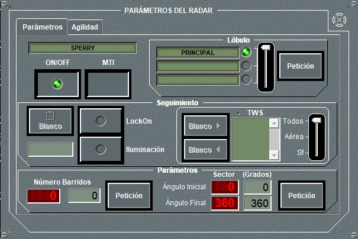

En el panel de detalle principal del radar se muestra la lista de radares instalados en la unidad, y la siguiente información para cada uno de ellos:
- Estado del Radar: Indica si el Radar está encendido (verde encendido), apagado (verde apagado), dañado (rojo) o si está siendo interferido (amarillo). También indica mediante dos leds miniatura si el Radar está haciendo Lock-on o iluminando respectivamente. Pulsando este botón se puede encender o apagar el Radar sin tener que acceder al panel de configuración correspondiente. Algunos Radares específicos para dirección de tiro no pueden encenderse pulsando este botón, ya que sólo se activan cuando hacen lock-on o iluminan.
- Nombre del Radar: Indica el nombre asignado al Radar.
- Tipo del Radar: Indica el tipo de Radar, por ejemplo si es de Navegación, Aéreo, si es Dirección de Tiro, etc.
- MTI: Indica si el Radar tiene capacidad MTI y si la tiene, indica si está activada o no. Pulsando este botón se puede activar o desactivar el MTI sin tener que acceder al panel de configuración correspondiente.
- Sector: Indica el sector en el que barre el Radar. Si el sector es circular, indicará 0 – 360.
- Barridos: Indica el número de barridos que efectúa el Radar cuando se enciende. Si su valor es 0, el Radar barrerá el sector indefinidamente.
- Configurar: Pulsando este botón se accede al panel de configuración del Radar.

En esta primera pestaña del panel (parámetros) se pueden realizar las siguientes acciones:
- Encender / Apagar el Radar: Pulsando el botón ON/OFF. En el caso de radares exclusivos de tipo Dirección de Tiro, esta opción está deshabilitada y el radar sólo se enciende al activar la opción Lock‑On. En las unidades submarinas solo se puede encender el Radar si están en superficie o tienen el mástil correspondiente izado. En general, para todas las unidades, deben estar fuera de la base. El radar no podrá encenderse si su valor de ARP es 0 o si no tiene lóbulos definidos.
- Encender / Apagar el MTI: Pulsando el botón MTI. Si se activa la característica MTI, si estaba operando en frecuencia ágil, pasará automáticamente a operar en la frecuencia fija central característica del equipo.
- Seleccionar el lóbulo: En los radares que dispongan de más de un lóbulo, puede seleccionarse éste mediante la barra deslizante Lobe. Una vez seleccionado el lóbulo (1, 2 o 3) al pulsar el botón Petición, el radar cambiará de lóbulo y su nombre aparecerá en la etiqueta.
- Lock-On / Iluminación: Para hacer Lock-On o Iluminación sobre un blanco, deberá ponerse éste primero en Hook. Pulsando el botón Blanco, aparecerá el identificador de la traza en el cuadro de texto bajo dicho botón. Al pulsar el botón LockOn, el radar intentará hacer Lock-On sobre el blanco, permaneciendo el led en amarillo mientras lo intenta, y encendiéndose el led en verde si lo consigue. Una vez en Lock-On, al pulsar el botón Iluminación, el radar intentará iluminar el blanco, encendiéndose el led verde si lo consigue. Si se pulsa Iluminación mientras el Lock-On aún no se ha conseguido y por tanto el led de Lock-On está aún en amarillo, el led de Iluminación permanecerá también en amarillo hasta que se produzca el Lock-On, momento en el que pasarán ambos a verde.
- Track While Scan (TWS): Para hacer TWS sobre un conjunto de blancos deberá ponerse cada blanco en hook y pulsar el botón Blancou. El radar realizará el TWS sobre los blancos que están en la lista si las condiciones lo permiten. El número máximo de blancos (aéreos y de superficie) depende de las características del Radar. Para eliminar un blanco de la lista debe seleccionarse y pulsar el botón Blancot. La barra de desplazamiento de la derecha se utiliza para filtrar la lista mostrando todas las trazas, sólo las de superficie o sólo las aéreas. Esta acción no puede solicitarse si el valor de ARP del radar es 0.
- Asignar número de barridos: Para asignar un número de barridos diferente de cero debe introducirse el número en el campo correspondiente y pulsar el botón Petición. A partir de este momento, si el radar está encendido, éste efectuará el número de barridos introducido y se apagará. El indicador Número Barridos mostrará en cada momento el número de barridos pendientes. Esta asignación de número de barridos permanece hasta que se realice una nueva asignación, que sería a cero si se quiere desactivar esta capacidad. Esta acción no puede solicitarse si el valor de ARP del radar es 0.
- Asignar sector: Introduciendo los ángulos inicial y final del sector que se desea barrer, al pulsar el botón Petición, quedará asignado dicho sector, siempre que esté comprendido dentro del sector de instalación del radar. Para desactivar el barrido de sector deberán introducirse los valores 0 y 360 en los ángulos inicial y final, respectivamente.
Si el equipo está dañado, no se podrá realizar ninguna operación sobre él.
En la segunda pestaña del panel (Agilidad) se pueden realizar las siguientes acciones, que estarán disponibles o no dependiendo de la configuración del radar en preparación:
- Activar la Agilidad en Frecuencia y seleccionar la notación correspondiente.
- Activar la Agilidad en PRF y seleccionar la notación correspondiente.
- Activar la Modulación Intrapulso y la agilidad en PW.
Es importante aclarar que las modificaciones que realice el operador en esta ventana no tendrán efecto alguno sobre la operación del radar (es decir, sobre su capacidad de detección de contactos), siendo su único efecto modificar la forma en que es detectado por los equipos de ESM que estén en alcance.